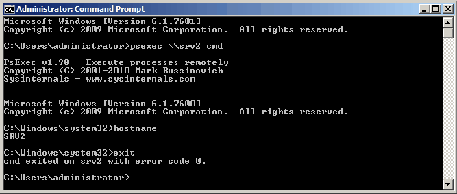

PsExec — это удобная утилита командной строки, с помощью нее можно запускать программы на удаленных Windows системах, перенаправляя данные, которые выводится приложением на экран на локальный ПК. Т.е. при работе с этой утилитой складывается ощущение, что приложение работает локально на вашем ПК.
Удобство PsExec в том, что ее легко развернуть в сети благодаря возможности удаленной установки, без необходимости устанавливать или настраивать что-либо на каждом. На удаленном ПК PsExec работает в виде службы Windows с таким же именем.
